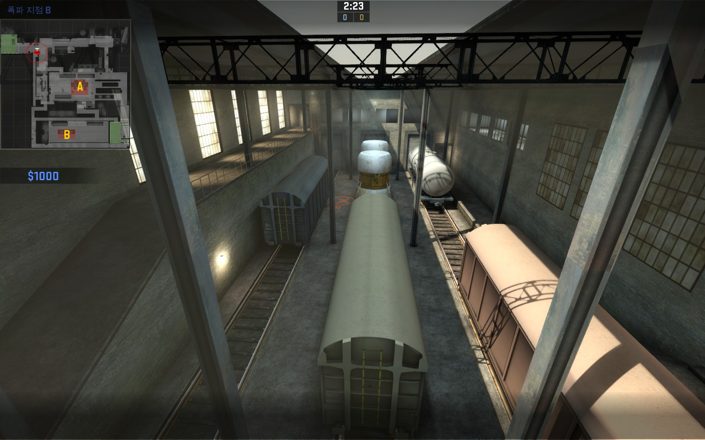

이 맵은 열차 번호만 외우면 끝입니다. 나머지는 다 필요 없어요
설치지점 A입니다. 왼쪽 부터 6,5,4번이라고 불립니다.
옛날에는 4번쪽 터널안이 설치 지역이었으나 이번에는, 5번으로 옮겨졌습니다.
테러리스트가(이하 테러)시작 지점에서 쭉 직진만 하면 여기로 나옵니다.
여기서 오른쪽으로 꺾어서 설치를 할 건지 아니면, 왼쪽으로 가 B에서 설치를 할건지는 자유입니다.
여기는 반대로 시작 지점에서 바로 오른쪽으로 꺾으면 나오는 곳 입니다. 여기를 보일러라고 합니다.
여기는 B를 가기위한 곳이며 높은 곳과 낮은곳을 선택해 갈 수 있습니다.
여기는 테러가 바로 4번쪽으로 나갈수 있는 길 역할을 합니다.

여기는 설치지점 B 입니다.
왼쪽 부터 1,2,3번이라고 부릅니다.
2번이 설치 지점이며 한 쪽은 높고 한 쪽은 낮은 고저차를 이용하면 쉽게 뚫을수 있습니다.